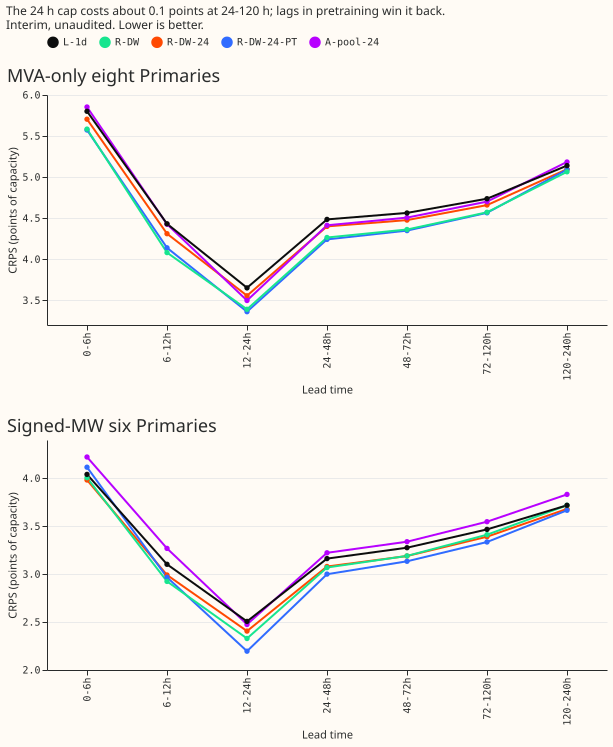
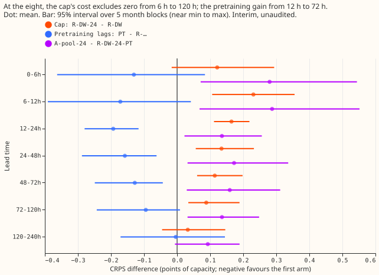

What does a 24-hour cap on the newest lag cost the lag-light demand network, and do lags in ERA5/CAMS pretraining recover it?
Take-home message. Dropping every reading newer than 24 hours raises the lag-light network's CRPS by 0.09 to 0.23 points of capacity at the eight MVA-only Primaries from 6 h to 120 h. Putting the same capped lags into the ERA5/CAMS pretraining lowers CRPS again by 0.13 to 0.19 points from 12 h to 72 h, which brings the capped network to within the minimum detectable effect of the uncapped one. The next step is to weigh that against a higher injected-shift leak: 7.7 points of capacity for the pretrained, capped network, against 5.4 without lags in pretraining and a 6.0 limit. Every number here is interim and unaudited.
Arm key. R-DW is experiment 539's lag-light network with uncapped day and week lags. R-DW-24 caps both lags at 24 h and adds block dropout, with lags added at fine-tuning only. R-DW-24-PT is R-DW-24 with the same capped lags also in the ERA5/CAMS pretraining. A-pool-24 is the capped recipe with A-pool's monthly refit and 182.6-day half-life, built in this experiment's fitting code, not in experiment 425's. L-1d is the lag-free network and A-pool the lag-enabled network. "The eight" are the MVA-only Primaries, "the six" the signed-MW Primaries. CRPS is in points of capacity.


Predictions
P1 fails: the cap raises CRPS at 48-120 h by more than the 0.05 limit. At the eight, R-DW-24 minus R-DW is 0.12, 0.23, and 0.16 at 0-6, 6-12, and 12-24 h, 0.13 and 0.11 at 24-48 and 48-72 h, and 0.09 at 72-120 h. The month-block interval excludes zero from 6 h to 120 h (0.03 to 0.36). The difference is positive in 5 of 5 folds in each of those bands. At 0-6 h the interval includes zero (-0.02 to 0.29), so the 0-6 h rise is not shown. The rises at 48-72 h and 72-120 h are below those bands' minimum detectable effect (0.14 and 0.10).
P2 is supported at 12-72 h, with the gain near the detectable limit. R-DW-24-PT minus R-DW-24 is -0.19, -0.16, -0.13, and -0.09 at 12-24, 24-48, 48-72, and 72-120 h at the eight. The interval excludes zero from 12 h to 72 h, with a negative sign in 5 of 5 folds. At 72-120 h the interval includes zero (-0.24 to 0.01), so that gain is not shown. The gains at 48-72 h and 72-120 h are below the minimum detectable effect. R-DW-24-PT against R-DW is not shown to differ in any band.
P3 fails on the point estimates. A-pool-24 minus R-DW-24-PT is 0.17, 0.16, and 0.14 at 24-48, 48-72, and 72-120 h, above the 0.04 limit. After the Bonferroni correction (4 tests) the intervals at 24-72 h include zero, so the gap is established only at 72-120 h. The gap also includes the difference between this experiment's fitting code and experiment 425's.
P4 fails on the point estimates. The injected-shift leak is 7.75 points of capacity for R-DW-24-PT, 5.43 for R-DW-24, 5.68 for R-DW, and 4.49 for L-1d. The intervals overlap (R-DW-24-PT 5.8 to 12.1, R-DW-24 2.6 to 11.5, L-1d 2.6 to 10.5), and no paired test was run. The R-DW-24-PT leak is highest on the first day after the shift (9.95).
Other results
The capped, pretrained network matches the uncapped one overall. Over all leads at the eight, CRPS is 4.72 for R-DW-24-PT, 4.71 for R-DW, 4.79 for R-DW-24, 4.85 for A-pool-24 and L-1d, 4.68 for A-pool, and 5.62 for the manual heuristic.
Removing the lags at inference worsens the pretrained networks most. CRPS rises by 0.05 for R-DW-24, 0.26 for R-DW-24-PT, and 0.38 for A-pool-24. The pretrained arms therefore rely more on their lags, which fits their higher injected-shift leak.
At the six, the cap changes CRPS by little. Over all leads CRPS is 3.43 for R-DW-24, 3.45 for R-DW, and 3.39 for R-DW-24-PT.
Leaving out training rows with a missing capped lag does not explain the A-pool-24 gap. CRPS is 4.852 with the rows left out and 4.850 without, a difference of 0.003, against a 0.13 gap between A-pool-24 and R-DW-24-PT.
Method notes and limits
The statistics use 5 month blocks, which is close to the minimum-to-maximum range of the folds.
Intervals are bootstraps over 5 month blocks. The minimum detectable effect, from the two L-1d
seeds, is 0.10 to 0.27 by lead band. The pre-registered Bonferroni count is 4. All contrasts, with
their per-fold signs, are in contrasts.csv in the private data folder.
Block dropout masks whole origin days. Each day is drawn from (seed, day number). The expected shares are 25.5% of days with all lags masked and 4.5% with only the day lag, the literal reading of "30% of days, 15% of those day-only". In one fine-tuning fit (R-DW-24-PT, fold 2025-10, seed 0) the realised shares were 23.1% and 7.1% of rows. Block dropout also masks the validation rows used for early stopping. The lag value statistics come from the uncapped lags and apply unchanged to the capped lags. In the pretraining rows of fold 2025-12, 0.65% lack the capped day lag and 0.79% the capped week lag (printed at run time).
Weather and lag timing are asserted. Every test row's weather run is at or before its origin (153 origins). Every capped lag is at least 24 h before its origin, checked against an independent loop on 2,000 rows per fold.
NGED's load-shift event labels are incomplete. Rows with no labelled event may hold unlabelled events, and these results are not corrected for that.
What to try next
- Test the capped recipe with delayed telemetry. The test that ages the lags by 1, 2, and 3 extra days was not run, and it is the direct check of the requirement that production survives telemetry delayed by days.
- Stress A-pool-24. Its monthly refit has no day-14 refit, so its injected-shift leak was not measured.
- Build A-pool-24 in experiment 425's own pipeline. The 0.14 to 0.17 gap to R-DW-24-PT mixes the capped recipe with a different fitting loop.
- Reduce the injected-shift leak of lag-aware pretraining. For example, draw the dropout again at each pretraining epoch, or raise the share of days with all lags masked.